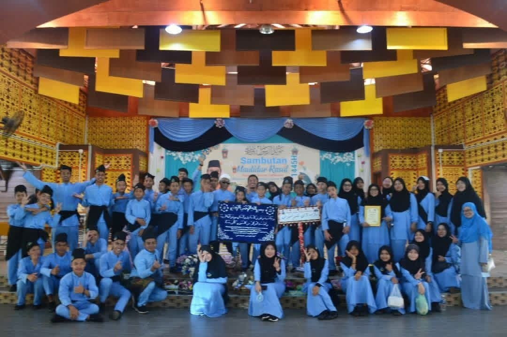
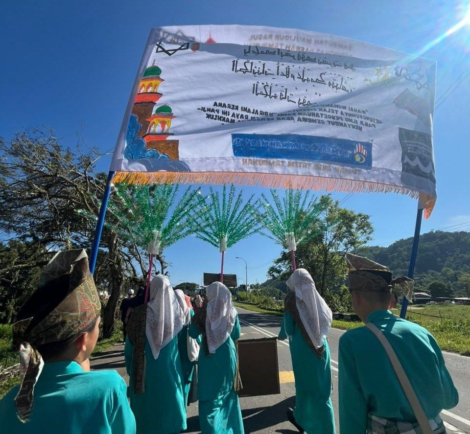

Education Support
Homework guidance, reading circles, motivational talks, and school supply drives help children stay engaged with learning.
A caring community where children are encouraged, protected, and given hope for the future.
Activities can help children develop confidence, discipline, creativity, and friendship. The examples below show suitable programmes that visitors and community groups may support.
Homework guidance, reading circles, motivational talks, and school supply drives help children stay engaged with learning.

Gardening, cleaning routines, cooking assistance, and teamwork activities build independence and practical confidence.

Festive visits, sports days, charity meals, and volunteer programmes strengthen bonds between the home and society.
A look at some of the home's recent achievements. Photos and details will be added here soon.

Best Contingent for 3 consecutive years since 2022.

Participation in the banner/calligraphy category at the district-level Maulidur Rasul celebration in Tambunan.
{kind=link}
{kind=link}